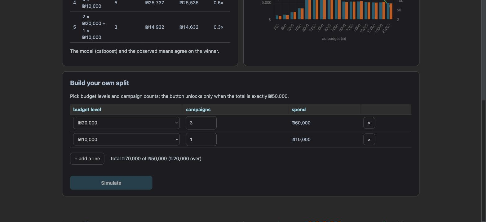

M7: לאן ילכו ₪50,000?
חבילה 6 של הברייף: מודל רווח לקמפיין (שלושה רגרסורים על פיצ'רי המשפך בלבד), פרופיל טיפוסי לכל אחת מ-16 רמות התקציב, וסימולטור שמחלק את התקציב החודשי בין קמפיינים: חמש אסטרטגיות מוכנות מדורגות לפי רווח צפוי, מול הממוצע שנצפה בפועל, ובונה חופשי שמשחרר את הכפתור רק כשהסכום הוא בדיוק ₪50,000.
שער M7: עבר 7/7בשפה פשוטה
המייסד שואל אם לשים את כל הכסף בשניים-שלושה קמפיינים גדולים או לפזר אותו על הרבה קטנים. הנתונים חד-משמעיים: קמפיין ברמת תקציב בינונית (₪2,000–5,000) מכניס בממוצע כ-₪22,000, קמפיין גדול (₪6,000 ומעלה) מכניס כ-₪5,000, וקמפיין קטן (עד ₪1,500) כ-₪1,000–3,000. זו מדרגה, לא שיפוע: תקציב גדול יותר קונה יותר לידים (ראינו ב-M2) אבל לא יותר רווח לקמפיין. לכן 25 קמפיינים של ₪2,000 צפויים להכניס פי 36 מ-2×20,000+10,000. ההסתייגות המרכזית היא תפעולית: להריץ 25 קמפיינים בחודש זה עסק אחר לגמרי מלהריץ שלושה.
מודל הרווח (3,471 קמפיינים עם רווח מתועד, 5-fold)
| מודל | RMSE (₪) | R² |
|---|---|---|
| XGBoost | 6,661 ± 1,633 | 0.647 |
| LightGBM | 6,594 ± 1,713 | 0.654 |
| CatBoost (מוגש) | 6,515 ± 1,680 | 0.662 |
סטיית התקן של הרווח היא ₪11,228, ו-9.7% מהקמפיינים הם באפס (לא-רוכשים, שנשארים בדאטה בכוונה לפי D-M2-1: קמפיין בלי רווח הוא תוצאה אמיתית שהסימולטור חייב לראות). כמו בוותק וב-upsell, calls_to_closed הוא הפיצ'ר החשוב ביותר (0.53), ואחריו answer_rate ו-budget_tier.
עקומת המודל: רווח לקמפיין לפי רמת תקציב
| תקציב | קמפיינים בדאטה | רווח לקמפיין (מודל) | ממוצע שנצפה | רווח לכל ₪1,000 (מודל) |
|---|---|---|---|---|
| ₪500 | 109 | ₪1,184 | ₪1,110 | ₪2,369 |
| ₪1,000 | 217 | ₪2,104 | ₪2,240 | ₪2,104 |
| ₪1,500 | 297 | ₪3,300 | ₪3,275 | ₪2,200 |
| ₪2,000 | 407 | ₪21,758 | ₪21,749 | ₪10,879 |
| ₪3,000 | 327 | ₪21,910 | ₪21,980 | ₪7,303 |
| ₪5,000 | 312 | ₪21,562 | ₪21,725 | ₪4,312 |
| ₪6,000 | 195 | ₪5,334 | ₪5,171 | ₪889 |
| ₪10,000 | 194 | ₪5,147 | ₪5,107 | ₪515 |
| ₪20,000 | 71 | ₪4,892 | ₪4,762 | ₪245 |
(תשע מתוך 16 הרמות; הטבלה המלאה ב-docs/REPORT.md §P6 ובלשונית Budget.) המודל והנתונים מסכימים בכל רמה בטווח של אחוזים בודדים.
חמש האסטרטגיות, מדורגות
| # | אסטרטגיה | קמפיינים | רווח צפוי (מודל) | לפי הממוצע שנצפה | תשואה |
|---|---|---|---|---|---|
| 1 | 25 × ₪2,000 | 25 | ₪543,950 | ₪543,720 | 10.9× |
| 2 | 10 × ₪5,000 | 10 | ₪215,620 | ₪217,251 | 4.3× |
| 3 | 100 × ₪500 | 100 | ₪118,430 | ₪110,970 | 2.4× |
| 4 | 5 × ₪10,000 | 5 | ₪25,737 | ₪25,536 | 0.5× |
| 5 | 2 × ₪20,000 + 1 × ₪10,000 | 3 | ₪14,932 | ₪14,632 | 0.3× |
ההכרעה: לרכז או לפזר?
D-M7-1 · הרווח הצפוי לרמה = המודל בממוצע על הקמפיינים האמיתיים, לא על "הקמפיין החציוני"
התוכנית הציעה להזין למודל פרופיל טיפוסי (חציון של כל פיצ'ר) לכל רמת תקציב. עשינו כך וקיבלנו בדיוק את אות הכשל שהתוכנית הזהירה ממנו: קמפיין של ₪500 קיבל ₪4,615 מול ₪1,110 שנצפה, ו-100×500 זינק למקום השני. הסיבה: המודל לא ליניארי בספירות המשפך, והחציון של כל עמודה בנפרד הוא קמפיין שלא קיים. הפתרון: בזמן האימון מחשבים לכל רמה את ממוצע התחזיות על הקמפיינים האמיתיים ושומרים אותו ב-models/profiles.json ליד הפרופיל החציוני (שנשאר לשקיפות). ה-API עדיין לא צריך מסד נתונים. המחיר: הסימולטור מוגבל ל-16 רמות התקציב שבדאטה; אין אקסטרפולציה לרמות חדשות, וזה בכוונה.
הסתייגויות למייסד
- קיבולת. 25 קמפיינים בחודש דורשים 25 קריאייטיבים, דפי נחיתה וצוות מכירות שיעבוד את הלידים (מ-M6: מכירה לוקחת חציון 3 שיחות). אם הצוות לא יכול, 10 × ₪5,000 עדיין מנצח ריכוז בפער עצום.
- הרמות הקטנות רועשות. ב-₪500 יש 109 קמפיינים והחציון נמוך בהרבה מהממוצע; 100×500 נשען על החלק הכי פחות אמין בעקומה.
- אין אקסטרפולציה. הסימולטור מכיר רק את 16 הרמות שבדאטה ומניח שקמפיינים בלתי תלויים (בלי רוויה של קהל ב-25 קמפיינים מקבילים).
- זה מבנה של דאטה תרגולי. הרווח כאן הוא כמעט פונקציה של tier; בייצור צריך לאמוד את העקומה מחדש מקמפיינים אמיתיים לפני שסומכים על החלוקה.
מה לומר למייסד בחודש הבא: את ₪50,000 לקמפיינים ברמה הבינונית: 25 × ₪2,000 אם הצוות עומד בזה, אחרת 10 × ₪5,000. להפסיק לקנות קמפיינים של ₪10,000 ומעלה עד שהנתונים יראו שהם מרוויחים יותר מ-₪5,000 כל אחד. לעקוב אחרי רווח לקמפיין לפי רמה; הסימולטור מדרג מחדש אוטומטית כשמאמנים מחדש.
מה חי באתר
GET /api/simulate/presets מחזיר את חמש האסטרטגיות מדורגות, את עקומת הרווח, את המנצח לפי המודל ולפי הנתונים והאם הם מסכימים. POST /api/simulate/budget מקבל חלוקה חופשית ומחזיר 422 אם הסכום אינו בדיוק ₪50,000 או שרמת תקציב לא קיימת. לשונית Budget: ארבעה KPI, טבלת האסטרטגיות (מודל מול נצפה), גרף העקומה עם מספר הקמפיינים לרמה, ובונה חופשי עם סכום רץ וכפתור שנעול עד שהסכום מדויק.


תוצאת השער
- עבר · pytest ירוק (88 בדיקות: ולידציית סכום, רמה לא מוכרת, כל האסטרטגיות = 50,000, מדרגת ה-tiers, ה-API).
- עבר · ruff נקי.
- עבר · מודל הרווח: שלושה רגרסורים ב-CV, artifact מוגש, 16 רמות ב-profiles.json.
- עבר · חמש אסטרטגיות, כל אחת בדיוק 50,000, מדורגות.
- עבר · המודל והנתונים מסכימים על המנצח.
- עבר · REPORT.md §P6 נוצר מהקוד (
python -m ml.simulator --write-report): הכרעה, הסתייגויות, "מה לומר בחודש הבא". - עבר · חי: presets מדורגים;
/budgetמחזיר 422 על סכום שגוי ו-200 על חלוקה תקינה; הבונה חוסם סכום שגוי (צילום).
הבא בתור: M8, סגירה ומסירה
README מלא (ארכיטקטורה, התקנה, פקודות, צילומים), REPORT.md עם תקציר מנהלים למייסד, סגירת PROJECT_LOG והאובסידיאן, "מבחן הזר" בדפדפן נקי, ורשימת הליטוש שנצברה (אזהרת "רחוק מנתוני האימון" בטופס החיזוי).